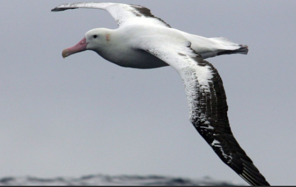

Tous ces oiseaux dépassent 3m d'envergure, c'est-à-dire du bout d'une aile au bout de l'autre, lorsqu'elles sont déployées.
L'albatros hurleur à gauche, qui mesure plus de 3,50m d'envergure, se sert du vent pour planer. Et le vautour fauve fait un peu plus de 3m d'envergure. IL se nourrit d'animaux morts.
Le cygne trompette à gauche, fait 3,10m d'envergure. il a été beaucoup chassé ! Et le pélican blanc, de 3m d'envergure, vit près des fleuves et des lacs.